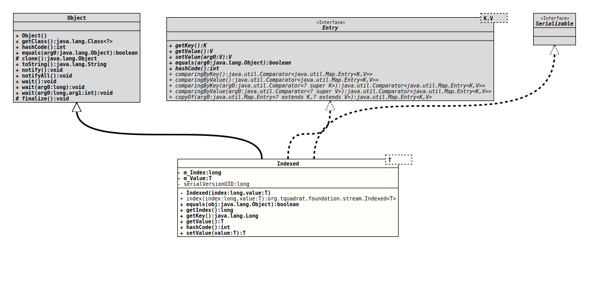

java.lang.Object
org.tquadrat.foundation.stream.Indexed<T>
- Type Parameters:
T- The type of the indexed value.
- All Implemented Interfaces:
Serializable,Map.Entry<Long,T>
@ClassVersion(sourceVersion="$Id: Indexed.java 995 2022-01-23 01:09:35Z tquadrat $")
@API(status=STABLE,
since="0.0.7")
public final class Indexed<T>
extends Object
implements Map.Entry<Long,T>, Serializable
A value combined with an index, indicating its position in an ordered
sequence.
- Author:
- Dominic Fox
- Modified by:
- Thomas Thrien (thomas.thrien@tquadrat.org)
- Version:
- $Id: Indexed.java 995 2022-01-23 01:09:35Z tquadrat $
- Since:
- 0.0.7
- See Also:
- UML Diagram
-

UML Diagram for "org.tquadrat.foundation.stream.Indexed"
{kind=link}
-
Field Summary
Fields -
Constructor Summary
Constructors -
Method Summary
Modifier and TypeMethodDescriptionfinal booleanfinal longgetIndex()Returns the index.final LonggetKey()final TgetValue()The indexed value.final inthashCode()static <T> Indexed<T>index(long index, T value) Factory method for instances ofIndexed; it combines an index and a value into an indexed value.final T
-
Field Details
-
m_Index
The index. -
m_Value
The value.
-
-
Constructor Details
-
Indexed
Creates a newIndexedinstance.- Parameters:
index- The index.value- The value.
-
-
Method Details
-
index
Factory method for instances ofIndexed; it combines an index and a value into an indexed value.- Type Parameters:
T- The type of the value.- Parameters:
index- The index of the value.value- The value indexed.- Returns:
- The indexed value.
-
equals
-
getIndex
Returns the index.- Returns:
- The index.
-
getKey
-
getValue
The indexed value. -
hashCode
-
setValue
-